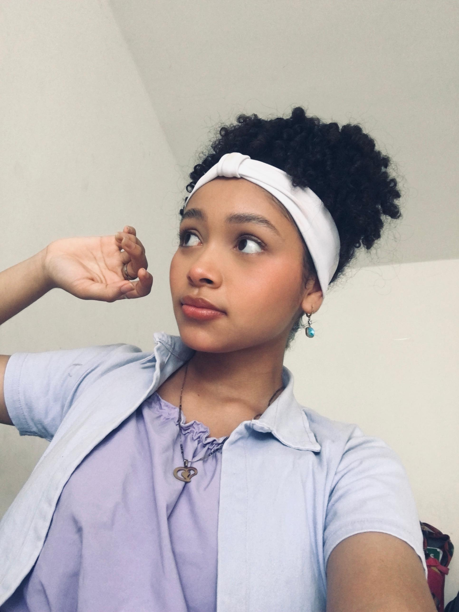

Yuly Ferreira | WDD 130
My name is Yuly Ferreira, and I am from Barranquilla, Colombia. I am currently a student, and I enjoy learning new things and developing my skills. I am interested in technology and web development. In my free time, I enjoy spending time with my family and friends. I am excited to learn more about creating websites and improving my programming skills.
